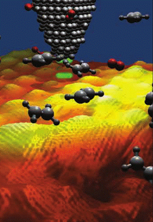
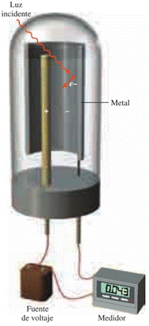
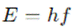
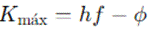
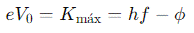

![IM]()
QUÍMICA (1123)
Objetivo(s) del curso:
El alumno aplicará los conceptos básicos para relacionar las propiedades de las sustancias en la resolución de ejercicios; desarrollará sus capacidades de observación y de manejo de instrumentos.
1. Estructura atómica.
1.1 Importancia de la química en las ingenierías.
QUÍMICA
La Química es una de las ciencias fundamentales más influyentes en el desarrollo y progreso de las ingenierías. Su impacto se manifiesta en la capacidad de los ingenieros para comprender y manipular materiales, procesos y reacciones a nivel molecular, lo que resulta esencial para resolver problemas complejos en una amplia variedad de campos.
La relación entre la química y la ingeniería no es meramente académica, sino que se traduce directamente en avances tecnológicos que han transformado la sociedad moderna. Desde la construcción de infraestructuras hasta la creación de tecnologías avanzadas, la química desempeña un papel crucial como base teórica y práctica.
En la ingeniería civil, por ejemplo, la química ha sido vital para el desarrollo de materiales de construcción más resistentes y duraderos. El concreto, uno de los materiales más utilizados en el mundo, se beneficia enormemente de los avances químicos.
La comprensión de las reacciones de hidratación del cemento y la interacción con aditivos permite ajustar las propiedades del concreto, como su resistencia, tiempo de fraguado y durabilidad. Además, los tratamientos químicos para proteger estructuras contra la corrosión y los efectos del medio ambiente son esenciales para garantizar su longevidad. En este contexto, la química no solo optimiza procesos de construcción, sino que también contribuye a la sostenibilidad al permitir el uso de materiales reciclados y la reducción de emisiones de dióxido de carbono.
La ingeniería mecánica también encuentra en la química una herramienta indispensable, especialmente en el diseño y fabricación de máquinas y estructuras. Los tratamientos térmicos y químicos de los metales, como el templado, el recocido y el nitrurado, se utilizan para modificar las propiedades mecánicas y térmicas de los materiales. Estos procesos, fundamentados en principios químicos, permiten que los ingenieros diseñen piezas capaces de soportar altas tensiones, temperaturas extremas y condiciones corrosivas. Además, la química de los lubricantes y refrigerantes es fundamental para garantizar el funcionamiento eficiente y seguro de sistemas mecánicos complejos.
En el ámbito de la ingeniería eléctrica y electrónica, la química se manifiesta en el diseño de materiales avanzados como semiconductores, superconductores y baterías. Los semiconductores, que forman la base de la tecnología moderna, dependen de una comprensión detallada de las propiedades químicas y electrónicas de los materiales.
El silicio, ampliamente utilizado en la fabricación de dispositivos electrónicos, es tratado químicamente para obtener propiedades específicas que permiten el flujo controlado de electricidad. Asimismo, las investigaciones químicas han permitido el desarrollo de baterías más eficientes y duraderas, como las baterías de iones de litio, que alimentan desde teléfonos móviles hasta vehículos eléctricos.

La ingeniería química, por su parte, es quizás el campo donde la relación entre la química y la ingeniería es más evidente. Los ingenieros químicos utilizan principios químicos para diseñar y optimizar procesos industriales que producen una amplia gama de productos, desde combustibles y plásticos hasta medicamentos y productos alimenticios.La química permite a estos ingenieros modelar y simular reacciones químicas a gran escala, identificar condiciones óptimas de operación y garantizar la seguridad en plantas de producción. Además, la ingeniería química desempeña un papel clave en la transición hacia fuentes de energía más limpias, desarrollando biocombustibles, celdas de combustible y tecnologías para la captura y almacenamiento de carbono.
En la ingeniería ambiental, la química es esencial para comprender y mitigar los impactos humanos en el medio ambiente. Los ingenieros ambientales utilizan principios químicos para tratar aguas residuales, controlar emisiones contaminantes y diseñar procesos sostenibles.
La química analítica, en particular, permite detectar y cuantificar contaminantes en aire, agua y suelo, lo que es crucial para evaluar riesgos y garantizar la calidad ambiental. Además, la química verde, una disciplina emergente, se centra en el diseño de procesos y productos que minimizan el uso y la generación de sustancias peligrosas, promoviendo prácticas más sostenibles.
Otro campo donde la química tiene un impacto significativo es la ingeniería biomédica. Los avances en química orgánica y bioquímica han permitido el desarrollo de materiales biocompatibles, como polímeros para prótesis, implantes y dispositivos médicos.
Además, la química farmacéutica es fundamental para el diseño y producción de medicamentos, vacunas y sistemas de liberación controlada de fármacos. Los ingenieros biomédicos, al aplicar conocimientos químicos, contribuyen a mejorar la salud y calidad de vida de las personas mediante innovaciones que integran química, biología y tecnología.
En la ingeniería de materiales, la química es la base para el diseño de nuevos materiales con propiedades específicas. Los materiales compuestos, por ejemplo, combinan polímeros, metales y cerámicas para crear estructuras ligeras y resistentes, utilizadas en industrias como la aeroespacial, automotriz y deportiva.
Los avances en nanotecnología, que también tienen raíces en la química, permiten manipular materiales a escala atómica y molecular, dando lugar a propiedades únicas como la superhidrofobicidad, la conductividad térmica y eléctrica mejoradas, y la resistencia extrema.
La química también juega un papel en la ingeniería energética, especialmente en el desarrollo de tecnologías relacionadas con la generación, almacenamiento y distribución de energía. Los principios de la termoquímica son fundamentales para diseñar sistemas de generación de energía más eficientes, como las turbinas de gas y las plantas termoeléctricas.
Asimismo, la electroquímica impulsa avances en celdas solares, baterías y sistemas de almacenamiento de energía. La capacidad de entender y manipular reacciones químicas es esencial para enfrentar los desafíos globales relacionados con la energía y el cambio climático.
Finalmente, la química en las ingenierías no solo se limita al diseño y desarrollo de materiales y procesos, sino que también es clave en la formación de ingenieros con pensamiento crítico y habilidades de resolución de problemas. La capacidad de analizar y modelar fenómenos químicos proporciona a los ingenieros una ventaja competitiva para abordar desafíos interdisciplinarios.
1.2 Descripción de los experimentos: Thomson, Millikan, Planck, efecto fotoeléctrico, espectros electromagnéticos.
EXPERIMENTO DE THOMSON
Descubrimiento del electrón mediante el experimento con rayos catódicos, demostrando la relación carga/masa de las partículas subatómicas.
EXPERIMENTO DE MILLIKAN
Medición de la carga del electrón con su famoso experimento de la gota de aceite, confirmando la cuantización de la carga.
EXPERIMENTO DE PLANCK
Introducción del concepto de cuantos para explicar la radiación del cuerpo negro, que marcó el inicio de la teoría cuántica.
EFECTO FOTOELÉCTRICO

El efecto fotoeléctrico es un fenómeno fundamental que marcó el inicio de la física cuántica, desafiando las explicaciones clásicas sobre la naturaleza de la luz y su interacción con la materia. Este fenómeno fue descubierto por Heinrich Hertz y explicado por Albert Einstein, quien recibió el Premio Nobel de Física en 1921 por este trabajo. Este ocurre cuando ciertos materiales, especialmente metales, emiten electrones al ser iluminados con luz de una frecuencia adecuada. (Los medidores de luz que se utilizan en las cámaras fotográficas se basan en el efecto fotoeléctrico.)Descubrimiento y primeros estudios del efecto fotoeléctrico
El estudio de la luz y su naturaleza ha sido una preocupación constante en la historia de la física. Isaac Newton propuso que la luz estaba compuesta de partículas, mientras que otros científicos, como Thomas Young y James Clerk Maxwell, demostraron la naturaleza ondulatoria de la luz a través de fenómenos como la interferencia y la difracción. La teoría electromagnética de Maxwell consolidó la idea de que la luz era una onda electromagnética, capaz de propagarse en el vacío y transportar energía a través del espacio.
En 1887, Heinrich Hertz, mientras investigaba las ondas electromagnéticas predichas por Maxwell, observó un fenómeno que no encajaba en el marco de la teoría ondulatoria. Hertz descubrió que las chispas eléctricas saltaban con mayor facilidad entre dos electrodos metálicos cuando estos eran iluminados por luz ultravioleta.
Este hallazgo fue el primer indicio experimental del efecto fotoeléctrico, aunque en ese momento no se comprendía completamente su significado.
Posteriormente, Wilhelm Hallwachs y Philipp Lenard realizaron experimentos que mostraron que ciertos metales emitían electrones cuando eran iluminados por luz de alta frecuencia, como la ultravioleta. Esta emisión de electrones, conocida como fotoemisión, planteó serias dudas sobre la teoría clásica de la luz, que predecía que la energía de la luz debería depender de su intensidad, no de su frecuencia.
Crisis de la teoría clásica y la hipótesis cuántica
La teoría clásica, basada en el modelo ondulatorio de la luz, no podía explicar adecuadamente el efecto fotoeléctrico. Según esta teoría, aumentar la intensidad de la luz debería incrementar la energía de los electrones emitidos. Sin embargo, los experimentos mostraron que la energía de los electrones emitidos dependía únicamente de la frecuencia de la luz y no de su intensidad. De hecho, no importaba cuán intensa fuera la luz, si su frecuencia no superaba un umbral específico, no se emitían electrones.
Este enigma llevó a una crisis en la física clásica. La solución llegó en 1905, cuando Albert Einstein propuso una interpretación revolucionaria basada en la hipótesis cuántica de Max Planck. Planck había introducido en 1900 la idea de que la energía electromagnética se emite o absorbe en unidades discretas, o cuantos, para explicar la radiación del cuerpo negro. Einstein extendió esta idea, postulando que la luz no solo se comporta como una onda, sino que también está compuesta de partículas discretas de energía, que llamó fotones.
Explicación de Einstein acerca del fotón
Einstein propuso que cada fotón tiene una energía proporcional a la frecuencia de la luz, según la ecuación:

donde E es la energía del fotón, h es la constante de Planck (6.626×10−34 J⋅s), y f es la frecuencia de la luz.
Según esta teoría, cuando un fotón incide sobre la superficie de un metal, su energía se transfiere a un electrón. Si la energía del fotón es suficiente para superar la función trabajo (ϕ) del metal, que es la energía mínima necesaria para liberar un electrón, el electrón será emitido. La energía cinética máxima de los electrones emitidos está dada por la ecuación:

Esta ecuación explica varios aspectos experimentales del efecto fotoeléctrico:
- Existencia de una frecuencia umbral: Si la frecuencia de la luz es menor que un valor crítico (fumbral), no se emiten electrones, sin importar la intensidad de la luz. Esto se debe a que la energía de los fotones es insuficiente para superar la función trabajo.
- Dependencia de la energía de los electrones con la frecuencia: A mayor frecuencia de la luz, mayor será la energía cinética de los electrones emitidos. Esto contrasta con la predicción de la teoría clásica, que sugería que la energía de los electrones debería depender de la intensidad de la luz.
- Independencia de la energía de los electrones con la intensidad: Aumentar la intensidad de la luz solo incrementa el número de fotones incidentes y, por lo tanto, el número de electrones emitidos, pero no su energía.
- Emisión instantánea de electrones: Según la teoría ondulatoria, debería haber un retraso temporal mientras los electrones absorben suficiente energía para escapar del metal. Sin embargo, los experimentos mostraron que la emisión es prácticamente instantánea, lo que se explica fácilmente si cada fotón transfiere su energía de manera instantánea a un electrón.
Confirmación experimental y la constante de Planck
La interpretación de Einstein fue confirmada experimentalmente por Robert Millikan en 1914. Aunque Millikan era escéptico respecto a la teoría cuántica de Einstein, sus meticulosos experimentos demostraron que la relación entre la energía cinética máxima de los electrones y la frecuencia de la luz era lineal, tal como predecía la ecuación de Einstein.
El experimento típico del efecto fotoeléctrico involucra un tubo de vacío con un cátodo y un ánodo. La luz incide sobre el cátodo, liberando electrones, que son atraídos hacia el ánodo, generando una corriente eléctrica llamada fotocorriente. Aplicando un potencial de frenado (V0), se puede detener el flujo de electrones. El potencial de frenado está relacionado directamente con la energía cinética máxima de los electrones:

Una gráfica del potencial de frenado V0 en función de la frecuencia f de la luz da como resultado una línea recta, cuya pendiente es h/e, permitiendo la determinación experimental de la constante de Planck.
La dualidad onda-partícula
El efecto fotoeléctrico no solo proporcionó una explicación satisfactoria del comportamiento de la luz, sino que también llevó al desarrollo del concepto de dualidad onda-partícula. Este concepto, fundamental en la física cuántica, establece que la luz y otras formas de radiación electromagnética exhiben tanto propiedades ondulatorias como corpusculares, dependiendo del experimento que se realice.
Por ejemplo, fenómenos como la interferencia y la difracción demuestran la naturaleza ondulatoria de la luz, mientras que el efecto fotoeléctrico y la dispersión Compton revelan su comportamiento como partículas. Esta dualidad fue extendida por Louis de Broglie, quien postuló que no solo la luz, sino también las partículas materiales, como los electrones, poseen propiedades ondulatorias, dando origen a la mecánica cuántica ondulatoria.
Aplicaciones del efecto fotoeléctrico
El efecto fotoeléctrico no es solo un fenómeno teórico, sino que tiene múltiples aplicaciones prácticas en la tecnología moderna. Entre las más destacadas se encuentran:
1. Celdas fotoeléctricas y paneles solares: Utilizan el efecto fotoeléctrico para convertir la energía de la luz solar en electricidad. Los fotones inciden sobre materiales semiconductores, liberando electrones que generan una corriente eléctrica.
2. Fotodetectores y cámaras digitales: Los sensores de las cámaras digitales, como los CCD (dispositivos de carga acoplada), emplean el efecto fotoeléctrico para convertir la luz en señales eléctricas, que luego se procesan para formar imágenes digitales.
3. Visión nocturna: Los dispositivos de visión nocturna amplifican la luz disponible mediante el efecto fotoeléctrico. Los fotones que inciden sobre una superficie sensible liberan electrones, que son acelerados y amplificados para formar una imagen visible incluso en condiciones de baja iluminación.
4. Espectroscopía fotoelectrónica: Esta técnica se utiliza para estudiar la estructura electrónica de átomos y moléculas. Al medir la energía de los electrones emitidos por efecto fotoeléctrico, se puede obtener información detallada sobre los niveles de energía y las propiedades químicas de los materiales.
5. Astrofísica y exploración espacial: El efecto fotoeléctrico es fundamental en la detección de radiación cósmica y en la observación de fenómenos astrofísicos. Por ejemplo, los telescopios espaciales utilizan detectores basados en este efecto para capturar imágenes de alta resolución del universo.
ESPECTROS ELECTROMAGNÉTICOS
Análisis de las líneas espectrales de los átomos, mostrando que los electrones ocupan niveles de energía discretos.
1.3 Modelo atómico de Bohr y teoría de Broglie.
Modelo de Bohr: Propone que los electrones se mueven en órbitas fijas alrededor del núcleo y emiten o absorben energía al saltar entre niveles discretos. Explicó el espectro del hidrógeno, aunque tiene limitaciones para átomos más complejos.
Teoría de De Broglie: Introduce la naturaleza ondulatoria de las partículas subatómicas, postulando que los electrones tienen propiedades de onda y partícula, lo que lleva a la formulación de la mecánica cuántica.
1.4 Modelo atómico de la mecánica cuántica, números cuánticos y estructura electrónica.
El modelo cuántico describe los electrones en términos de funciones de onda (orbitales) y probabilidades de localización, reemplazando el concepto clásico de órbitas.
Los números cuánticos (principal, azimutal, magnético y de espín) definen las características de los electrones y sus configuraciones en los átomos.
La estructura electrónica determina propiedades químicas y físicas, como la reactividad y los estados de energía.
1.5 Diamagnetismo, paramagnetismo y ferromagnetismo.
Diamagnetismo: Materiales que generan un campo magnético débil en oposición a un campo externo aplicado. No tienen electrones desapareados.
Paramagnetismo: Materiales con electrones desapareados que se alinean débilmente con un campo magnético externo.
Ferromagnetismo: Materiales con dominios magnéticos alineados, capaces de mantener una magnetización permanente (e.g., hierro, níquel).
1.6 Dominios magnéticos y magnetización.
Los dominios magnéticos son regiones en un material donde los momentos magnéticos están alineados. En ausencia de un campo externo, los dominios suelen orientarse aleatoriamente.
La magnetización ocurre cuando un campo magnético externo alinea los dominios, y en algunos materiales (ferromagnéticos), esta alineación puede persistir incluso después de retirar el campo.
2. Periodicidad química.
2.1 Propiedades de los elementos: masa atómica, punto de ebullición, carácter ácido-base, punto de fusión, carácter metálico, densidad, radio atómico, radio iónico, energía de primera ionización, estructura cristalina, electronegatividad, conductividad térmica y conductividad eléctrica.
Masa atómica: Refleja el promedio ponderado de las masas de los isótopos de un elemento. Influye en las tendencias periódicas.
Punto de ebullición y punto de fusión: Dependen de la estructura electrónica y las fuerzas intermoleculares. Siguen patrones periódicos y varían según el grupo y el periodo.
Carácter ácido-base: Relacionado con la capacidad de los elementos para donar o aceptar protones, variando dentro de los grupos y períodos.
Carácter metálico: Tiende a disminuir de izquierda a derecha a través de un periodo y aumenta al descender en un grupo.
Densidad: Depende de la masa y el volumen atómicos, mostrando una relación compleja en la tabla periódica.
Radio atómico e iónico: El radio atómico disminuye en un periodo debido al aumento de la carga nuclear efectiva y aumenta en un grupo. Los radios iónicos dependen de la carga del ion.
Energía de primera ionización: Energía necesaria para eliminar un electrón, aumenta en un periodo y disminuye en un grupo.
Estructura cristalina: Determinada por el empaquetamiento de átomos o iones, con patrones específicos para metales y no metales.
Electronegatividad: Mide la tendencia de un átomo a atraer electrones en un enlace. Aumenta de izquierda a derecha en un periodo y disminuye en un grupo.
Conductividad térmica y eléctrica: Propiedades características de los metales, disminuyen en los no metales.
2.2 Analogías en las propiedades de los elementos para los miembros de un mismo periodo o de un mismo grupo.
Dentro de un mismo periodo: Las propiedades cambian de manera predecible debido a la adición de electrones en el mismo nivel de energía. Por ejemplo, la electronegatividad y la energía de ionización aumentan, mientras que el radio atómico disminuye.
Dentro de un mismo grupo: Los elementos comparten configuraciones electrónicas similares, lo que resulta en propiedades químicas comparables, como el carácter metálico o la acidez básica.
3. Enlaces químicos y fuerzas intermoleculares.
3.1 Teoría de enlace valencia.
Explica cómo los átomos comparten electrones para formar enlaces covalentes. Los orbitales atómicos de los átomos interactúan para formar un par compartido de electrones, estabilizando la molécula.
3.2 Enlaces químicos: enlaces covalentes puro, polar y coordinado.
Covalente puro: Se da entre átomos con electronegatividades similares. Los electrones se comparten equitativamente.
Covalente polar: Los electrones se comparten de manera desigual debido a diferencias en electronegatividad.
Coordinado: Un átomo dona ambos electrones del par compartido, mientras el otro no contribuye con electrones.
3.3 Enlace iónico.
Resultado de la transferencia completa de electrones de un átomo metálico a un no metálico, formando cationes y aniones que se atraen electrostáticamente.
3.4 Fuerzas intermoleculares entre moléculas diatómicas.
Incluyen fuerzas de dispersión de London, dipolo-dipolo y enlaces de hidrógeno. Determinan propiedades como el punto de ebullición y la solubilidad.
3.5 Estructuras de Lewis de moléculas sencillas.
Representaciones de las moléculas mostrando los electrones de valencia y las conexiones entre los átomos.
3.6 Teoría de repulsión de los pares electrónicos de la capa de valencia.
redice la geometría molecular considerando que los pares de electrones se repelen y buscan maximizar su separación.
3.7 Geometría molecular y polaridad con respecto a átomos centrales.
Determinadas por la disposición tridimensional de los átomos alrededor del átomo central y la distribución de la carga eléctrica.
3.8 Fases: sólida, líquida y gaseosa.
Se distinguen por el orden molecular y la energía cinética. La transición entre fases depende de la temperatura y presión.
3.9 Fenómenos de superficie: tensión superficial, capilaridad
· Tensión superficial: Fuerza que minimiza el área superficial de un líquido.
· Capilaridad: Capacidad de un líquido de ascender o descender en un tubo estrecho debido a fuerzas de adhesión y cohesión.
3.10 Disoluciones: diluidas, saturadas y sobresaturadas.
· Diluidas: Contienen poca cantidad de soluto en relación con el solvente.
· Saturadas: Contienen la máxima cantidad de soluto que puede disolverse.
· Sobresaturadas: Contienen más soluto que en una saturada a la misma temperatura.
3.11 Dispersiones coloidales.
Mezclas donde partículas diminutas están suspendidas en un medio continuo, sin sedimentarse.
3.12 Conductividad eléctrica de materiales iónicos en disolución.
Depende de la movilidad de los iones en el solvente. Los compuestos iónicos conducen electricidad al disolverse, liberando iones móviles.
4. Teoría del orbital molecular y cristaloquímica.
4.1 Teoría del orbital molecular para moléculas diatómicas.
Los orbitales moleculares se forman a partir de la combinación de orbitales atómicos. Existen orbitales de enlace, que estabilizan la molécula, y orbitales antienlaces, que la desestabilizan. Este modelo explica propiedades como la longitud y energía de enlace.
4.2 Teoría de las bandas.
Desarrollada para describir sólidos. En materiales metálicos, las bandas de conducción y valencia se superponen, permitiendo la libre movilidad de electrones. En semiconductores y aislantes, hay una brecha de energía entre estas bandas, afectando su conductividad eléctrica.
4.3 Enlace metálico.
Se basa en un "mar de electrones" deslocalizados que rodean núcleos metálicos. Esto explica propiedades como la conductividad eléctrica y térmica, ductilidad y maleabilidad de los metales.
4.4 Aislantes, semiconductores, conductores y superconductores. Aplicaciones.
· Aislantes: Materiales con una gran brecha de energía entre la banda de valencia y la de conducción, impidiendo la movilidad de electrones.
· Semiconductores: Tienen una brecha de energía pequeña, y su conductividad aumenta con la temperatura.
· Conductores: Como los metales, permiten el flujo de electrones libremente.
· Superconductores: Materiales que conducen electricidad sin resistencia a temperaturas críticas bajas. Usados en aplicaciones como trenes de levitación magnética.
4.5 Cristales: celdas unitarias, tipos de cristales.
Celdas unitarias: Son las unidades más pequeñas que, repetidas, forman una red cristalina. Se clasifican en cúbica, tetragonal, hexagonal, entre otras.
Tipos de cristales: Incluyen cristales iónicos (como el NaCl), covalentes (diamante), metálicos y moleculares (hielo).
5. Estequiometría.
5.1 Conceptos de mol y masa molar.
· Mol: Unidad fundamental que representa 6.022×1023 partículas, ya sean átomos, moléculas o iones.
· Masa molar: Masa de un mol de una sustancia, medida en g/mol. Es igual a la masa atómica o molecular promedio.
5.2 Relaciones estequiométricas: relación en entidades fundamentales, relación molar y relación en masa.
Relación en entidades fundamentales: Proporción de átomos o moléculas basada en ecuaciones balanceadas.
Relación molar: Proporción entre moles de reactivos y productos en una reacción.
Relación en masa: Conversión de moles a gramos usando la masa molar.
5.3 Tipos de recciones: redox y ácido-base.
Redox: Involucran transferencia de electrones; esenciales en baterías, corrosión y bioprocesos.
Ácido-base: Reacciones que implican transferencia de protones (H⁺), fundamentales en neutralizaciones.
5.4 Cálculos estequiométricos: reactivos limitante y en exceso, rendimientos teórico, experimental y porcentual.
Reactivo limitante: Reactivo que se consume primero, determinando la cantidad de producto.
Reactivo en exceso: Aquel que sobra después de completar la reacción.
Rendimiento teórico, experimental y porcentual: Proporción entre el producto real obtenido y el esperado.
5.5 La fase gaseosa y la ecuación del gas ideal.
La ecuación PV=nRT describe el comportamiento de los gases, donde P es presión, V volumen, n moles, R la constante de los gases y T temperatura.
5.6 Unidades de concentración: molaridad, porcentajes masa/masa, masa/volumen y volumen/volumen, fracción molar y partes por millón.
· Molaridad (M): Moles de soluto por litro de solución.
· Porcentajes masa/masa, masa/volumen y volumen/volumen: Indican proporciones en distintas unidades.
· Fracción molar: Relación de moles de un componente con respecto al total.
· Partes por millón (ppm): Proporción en trazas, usada en análisis ambientales y químicos.
6. Termoquímica y equilibrio químico.
6.1 Calor de una reacción química.
· Se refiere al cambio de entalpía (ΔH) asociado con una reacción química.
· Reacciones exotérmicas: Liberan calor (ΔH<0).
· Reacciones endotérmicas: Absorben calor (ΔH>0).
6.2 Ley de Hess.
Establece que el cambio de entalpía total de una reacción es independiente del camino tomado entre reactivos y productos.
Permite calcular ΔH de reacciones indirectamente, sumando los ΔH de pasos intermedios.
6.3 Constante de equilibrio de una reacción química.
Representa la relación entre las concentraciones de productos y reactivos en equilibrio.
Se expresa como Kc para concentraciones molares y Kp para presiones parciales en gases.
K>1: La reacción favorece
productos.
K<1: Favorece reactivos.
6.4 Principio de Le Chatelier.
Describe cómo un sistema en equilibrio responde a cambios en concentración, presión o temperatura:
· Aumentar la concentración de un reactivo favorece la formación de productos.
· Incrementar la presión favorece el lado con menos moles de gas.
· Cambios de temperatura afectan 𝐾 dependiendo si la reacción es exotérmica o endotérmica.
7. Electroquímica.
7.1 La electricidad y las reacciones químicas.
La electroquímica estudia la relación entre reacciones químicas y corrientes eléctricas, cubriendo fenómenos como las celdas electroquímicas y procesos redox.
7.2 Leyes de Faraday. Equivalente químico.
Las leyes de Faraday cuantifican la relación entre la cantidad de electricidad y la cantidad de sustancia transformada en un electrodo:
· Primera ley: La masa depositada es proporcional a la cantidad de electricidad.
· Segunda ley: La masa depositada depende del equivalente químico.
El equivalente químico se relaciona con la masa molar y la valencia del ion involucrado.
7.3 Potencial estándar. Serie de actividad.
El potencial estándar (E∘) mide la tendencia de un elemento a ganar o perder electrones en condiciones estándar.
La serie de actividad clasifica los elementos según su capacidad reductora u oxidante.
7.4 Procesos electroquímicos.
Incluyen la conversión de energía química en eléctrica (celdas galvánicas) y de energía eléctrica en química (electrólisis).
7.5 Galvanización.
Proceso para proteger metales recubriéndolos con una capa de zinc, que actúa como barrera contra la corrosión.
7.6 Electrodepositación.
Depósito de un metal en un electrodo mediante electrólisis, utilizado en la fabricación de componentes electrónicos y recubrimientos.
7.7 Corrosión. Inhibidores. Protección catódica.
· Corrosión: Degradación de metales por reacciones electroquímicas con el ambiente.
· Inhibidores: Sustancias que reducen la velocidad de corrosión.
· Protección catódica: Método que utiliza un ánodo sacrificial o una corriente eléctrica para proteger metales.
8. Bibliografía.
CHANG, Raymond - Química.